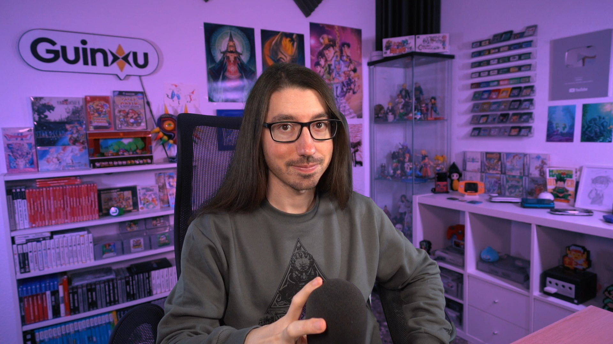
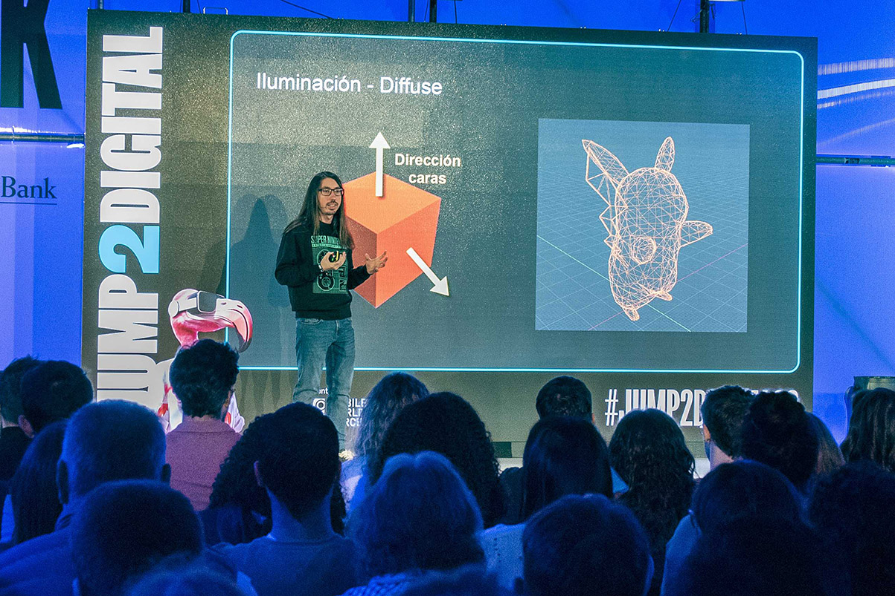
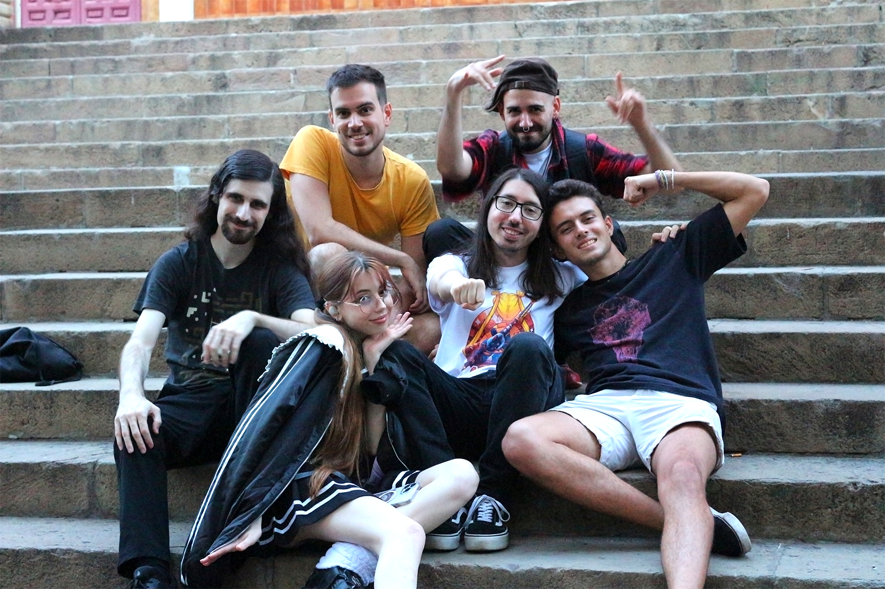

Galería
Pongo a disposición las siguientes imágenes para que los medios puedan ilustrar los artículos en los que hablen de mí.Índice
▶ Fotos de Guinxu
Guinxu en su setup de YouTube y Twitch.
Guinxu formando parte la familia de Embajadores de Intel.
Guinxu siendo entrevistado en Radio Sant Boi.
Guinxu dando una conferencia en Jump2Digital 2023 (Barcelona).
Foto de Guinxu en el bosque de bambú de Hokokuji.
Visita de Guinxu al museo TeamLab de Tokyo.
▶ Eventos y reuniones
Guinxu y Alva Majo enfrentándose a un duelo VR en EVA Madrid.
Guinxu dando una masterclass sobre iluminación en videojuegos en la Universitat Jaume I (UJI, Castellón).
Guinxu, Paracetamor y Silithur en el escenario de Intel de la Tenerife Lan Party (TLP) 2024.
Guinxu explicando gráficos 3D en Jump2Digital 2023 (Barcelona).
Guinxu en Jump2Digital con Nate Gentile, MoureDev, Míriam González, Rocío Tomé y BettaTech.
Guinxu visitando el stand de Farlands de EricRod (Leyendas y Videojuegos).
Guinxu con Mandy B. Blue, cantante del opening de Flatworld.
Guinxu con Crespo de Quantum Fracture.
Sr. Cheeto y Darío Eme Hache entrevistando a Guinxu y Nate Gentile.
Guinxu, Ray Bacon y Sergindsegasonic jugando con sus Game Boy Color.
Guinxu, Ray Bacon y Sergindsegasonic jugando con una Nintendo Switch.
Los Mafia Devs en el Indie Dev Day 2022 (Barcelona).
Mafia Devs Origins en el Indie Dev Day 2022 (Barcelona).
Guinxu con Alva Majo.
Guinxu en Mallorca con Ruki.
Guinxu en la Premiere de Rubius X con Alva Majo, Kony y Kevin.
Guinxu con Rubius en el estreno de su documental.
Guinxu con Nate Gentile y Alva Majo.
Guinxu con Xokas en la fiesta del estreno de Rubius X.
Guinxu con Mangel en el estreno de Rubius X.
Guinxu con su (supuesta) hermana Kony.
Guinxu con Chardi en el Indie Dev Day de Barcelona (2021).
Guinxu dando una conferencia en el Indie Dev Day 2021 (Barcelona).
Guinxu con Loulogio y Jape en el Salón del Comic de Valencia (2020).
Guinxu en la Nice One Barcelona en el Stand de Flatworld.
×